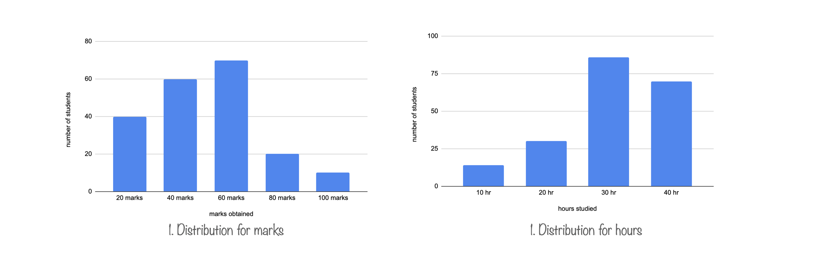

Marginal, conditional and joint distributions

The first distribution most people are made familiar with is the Normal — or Gaussian — distribution. It makes sense, since many processes in the world can be approximated by a Normal distribution, and if they cannot then they surely can via the Central Limit Theorem. Before we even start understanding normal distribution let's try to understand the fundamentals.
In this section we will try to understand following things:
1. Marginal Distribution
2. Conditional Distribution
3. Joint Distribution or Multivariate distribution
a. Univariate Vs. Multivariate Distribution
b. Parameters of Univariate and Multivariate Distribution
4. Multimodal distribution
Let's try to understand these things with an simple example: (Note: Usually distributions are plotted w.r.t frequency/count or probability/percentage.) Example: A school has made an survey about hours of time spent for study vs marks obtained by the students. Below is the table for this study.
1. Marginal Distribution
In the above diagram there are 2 variables. Those are Marks and Hours. We can plot distributions for these variables individually.
Observe in both of these charts y-axis is corresponding to frequency or count. These 2 charts are plotted for individual variable and referred as marginal distributions. Marginal distribution doesn't give relationship between the 2 variables. That's where joint distribution comes into picture. Before we move into joint distribution lets understand conditional distribution
2. Conditional Distribution
In the above table we can put some conditions for example: Distribution of marks obtained by the students who studied 30 hours. Then this becomes conditional distribution. Marginal distributions can be plotted w.r.t count or percentage but conditional distributions are always plotted w.r.t percentages.
As specified in the beginning of conditional distribution section we are only interested in those students who studied for 30 hours. Instead of plotting count or number of students on y axis we plotted percentage because conditional distribution always represented with percentage.
3. Joint Distribution or Multivariate distribution
In marginal and conditional distribution we are always focused on one variable. But the table talks about relationship between these 2 variable. To summarise, table talks about frequency/count relationship between these 2 variables.
How we can plot this distribution? So far, we had one variable on x-axis and count on other axis. To plot joint distribution lets put bot the variables on individual axis and count on third axis. Hence, Joint distribution can be plotted as
3.a. Univariate Vs. Multivariate Distribution
A univariate distribution refers to the distribution of a single random variable. On the other hand, a multivariate distribution refers to the probability distribution of a group of random variables.
3.b. Parameters of Univariate and Multivariate Distribution
If we want to describe the multivariate normal distribution we need the following three parameters:
a) List of means returns of each variate
b) List of variances of returns of each variate
c) List of correlations between each pair of variates.
A univariate normal distribution is described using just the two variables namely mean and variance. For a multivariate distribution we need a third variable, i.e., the correlation between each pair of random variables. This is what distinguishes a multivariate distribution from a univariate distribution. If there are n random variables in the group, we will have n*(n-1)/2 pairs of correlations.
4. Multimodal distribution
In statistics, a bimodal distribution is a probability distribution with two different modes, which may also be referred to as a bimodal distribution. These appear as distinct peaks (local maxima) in the probability density function, as shown in Figures:
Categorical, continuous, and discrete data can all form bimodal distributions. More generally, a multimodal distribution is a probability distribution with two or more modes. as illustrated in Figure. The figure shows A bivariate, multimodal distribution
Interesting read:
https://www.kaggle.com/code/iamleonie/handling-multimodal-distributions-fe-techniques/notebook
In your data any variable ( dependent or independent ) can follow multi-modal distribution. We can use GMM in order to distinguish the mixtures. It is an unsupervised approach. First plot the distribution and see how many modes you can see. These number of modes will become number of components for your Gaussian Mixture Model. For example in the below diagram for a variable there are 2 peaks hence n_components=2
References
https://www.khanacademy.org/math/statistics-probability/analyzing-categorical-data/distributions-in-two-way-tables/v/marginal-distribution-and-conditional-distribution
https://en.wikipedia.org/wiki/Joint_probability_distribution
https://financetrain.com/univariate-vs-multivariate-distribution
https://en.wikipedia.org/wiki/Multimodal_distribution